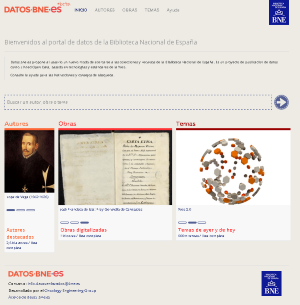
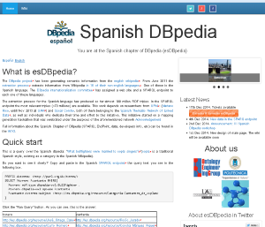
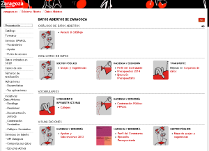
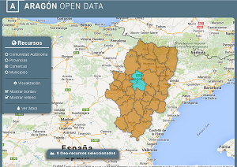
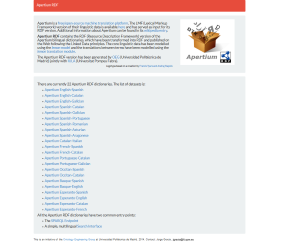
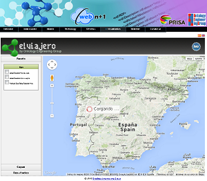

LinkedData.es
In this web, you will find the major initiatives, applications, websites and collaborations developed by the OEG.
GeoLinked Data(.es)
GeoLinked Data(.es) is an open initiative of the Ontology Engineering Group (OEG) whose aim is to enrich the Web of Data with Spanish geospatial data taken from National Geographic Institute of Spain and National Statistics Institute of Spain.
datos.bne.es
datos.bne.es initiative is part of the project "Linked data at the BNE", supported by the Spanish National Library (BNE) in cooperation with the OEG. With this initiative, the BNE takes the challenge of publishing bibliographic and authority data in RDF, following the Linked Data Principles and under the CC0 open license.
esDBpedia
esDBpedia contains the semantic information extracted from the Wikipedia in Spanish. OEG hosts the Spanish Chapter of DBpedia. 40% of the Spanish Wikipedia pages are not available in the English version. This makes it a valuable source of local information. In the Spanish DBpedia SPARQL endpoint the most relevant triples (~170 millions) are available.
Open Data Zaragoza
Open Data Zaragoza is an initiative of Zaragoza City Hall to promote the reuse of the information published in its website by citizens, companies and other institutions. OEG is supporting development and vocabulary definitions thanks to its knowledge in Linked Data principles.
SmartCity Catalogues
SmartCity catalogues collect ontologies and datasets about smart cities, energy and related fields. This work is developed within Ready4SmartCities European Project thatintends to increase awareness and interoperability for the adoption of ICT and semantic technologies in energy system to obtain a reduction of energy consumption and CO2 emission at smart cities communities level through innovative relying on RTD and innovation outcomes and ICT-based solutions

Buscador-visualizador territorial de información
This is a project developed in the Jacathon Aragon Open Data, awarded with "Jacathon Aragón Open Data" prize. The aim of this visualizer is to represent of all resources from catalog of Aragón: "Comunidad Autónoma", "Provincia", "Comarca" and "Municipios", so the final user can view class inheritance, data of geo-spatial resources or browse other links to check, add or learn more information about resource. Further information.
OOPS! - OntOlogy Pitfall Scanner!
OOPS! (OntOlogy Pitfall Scanner!) helps you to detect some of the most common pitfalls appearing when developing ontologies. To try it, enter a URI or paste an OWL document into the text field above. A list of pitfalls and the elements of your ontology where they appear will be displayed.
RDF License dataset
RDF License dataset provides an RDF representation of different licenses for data, software or general works. Licenses served under http://purl.oclc.org/NET/rdflicense/ are understood by humans and machines alike.
OnToology
OnToology is a system to automate part of the collaborative ontology development process. Given a repository with an owl file, OnToology will survey it and produce diagrams, a complete documentation and validation based on common pitfalls. OnToology can handle vocabularies OWL and RDFS in RDF+XML and Turtle serialization.
vocab.linkeddata.es
Loupe - The Linked Data Explorer
Loupe is an online tool for inspecting the structure of datasets to understand the data, formulate effective queries, or detect quality issues. Starting from the high-level statistics, Loupe allows users to zoom into details down to the corresponding triples. Loupe includes 2+ billion triples from datasets including DBpedia (17 languages), Wikidata, Linked Brainz, Bio2RDF, etc.
Apertium RDF
Apertium RDF contains the RDF (Resource Description Framework) version of the Apertium bilingual dictionaries, which have been transformed into RDF and published on the Web following the Linked Data principles. The core linguistic data has been modelled using the lemon model and the translations between terms have been modelled using the lemon translation module.
Terminesp Linked Data
Terminesp Linked Data is an initiative to transform into RDF, following Linked Data best practices, the lexical information from the lexical database Terminesp. Terminesp is a terminological database in Spanish created by AETER (Asociación Española de Terminología) by extracting the terminological data from the UNE documents produced by AENOR (Asociación Española de Normalización y Certificación). It contains the terms and definitions used in the UNE Spanish norms and amounts to more than thirty thousand terms with equivalences in other languages whenever they are available.

Lemon Assistant
Lemon Assistant allows you to create Lemon Patterns, the most typical patterns of the Lemon model. By using these patterns you create ontology 'lexicons', that is, lexicalizations of ontologies.
Leire
Leire reads created lexicalizations (created, for instance, by Lemon Assistant) and implements several consistency checks for each design pattern, such as checking for multiple plural forms for nouns.
RTVE LinkedData
RTVE LinkedData is collaboration between RTVE and the OEG to developed a semantic searcher of television programs, as well as the publication of that information in a SPARQL endpoint.

El Viajero - El País
El Viajero. In this use case, the contents of the Prisa Group have been published in RDF (Resource Description Framework), according to the Linked Data principles, and modeling all the available provenance with the Open Provenance Model. Information published comes from "Suplemento El País", "Guías Aguilar", "Canal Viajar" and "Prisa Digital". It also includes the recommendations of the users, their images and blogs. There's a visualizer available.
AemetLinked Data(.es)
AemetLinked Data(.es) was an open initiative of the Ontology Engineering Group (OEG) whose aim was to enrich the Web of Data with Spanish geospatial data. This initiative started off by publishing diverse information sources belonging to the Spanish Meteorological Agency.

Bicycle Sharing Systems
Inside the INNPRONTA project CIUDAD 2020 there is a study case related to bicycle sharing systems in different cities. Tthe goal of this case study is to publish up-to-date linked data about the availability of bikes and free slots in the stations of the different systems, and links to related resources like travel guides and points of interest, e.g. museums, restaurants.Further information.
Open Data CRTM
Open Data CRTM (Regional Consortium of Transportation for Madrid) is an initiative of CRTM to promote the reuse of the information published in its website by citizens, companies and other institutions. OEG is supporting the publication of that information in a SPARQL endpoint as well as the development of a vocabulary for CRTM data.Further information.
Awards
Here there is a list of awards obtained by OEG members:
- Honorary mention at Open Government Data Track of Triplification Challenge at I-SEMANTICS 2010 conference. September 2010.
- El Viajero. Triplification Challenge (I-Semantics 2011). Paper: A provenance aware linked data application for Trip Management and Organization Garijo, D.; Corcho, O.; and Villazón-Terrazas, B. In Proceedings of the 7th International Conference on Semantic Systems, pages 224-226, Graz, 2011. ACM.
- Special mention at the participation in the contest Open Data of Junta de Castilla y León (Spain) with Map4RDF iOS version. Oscar Corcho. Daniel Garijo. Alejandro Fernandez Carrera. October 2013.
- Jacathon - Aragon Open Data Winner with Aragopedia 2.0. Alejandro Fernandez Carrera together other non OEG member. September 2014.
- Fujitsu Laboratories of Europe Innovation Award. “Citizen Science and Games with a Purpose for LOD data curation”. Daniel Vila, Alejandro Fernández Carrera, Oscar Corcho. 2015.